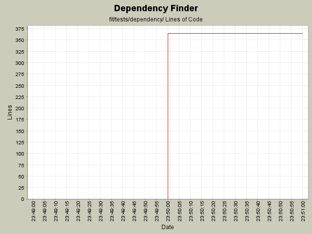

Summary Period: 2005-12-15 to 2005-12-15

Total Lines Of Code:
364 (2006-01-04 08:56)
| Author | Changes | Lines of Code | Lines per Change |
|---|---|---|---|
| jeantessier | 2 (100.0%) | 364 (100.0%) | 182.0 |
Settle initial Fit tests
364 lines of code changed in:
Generated by StatCVS 0.2.2